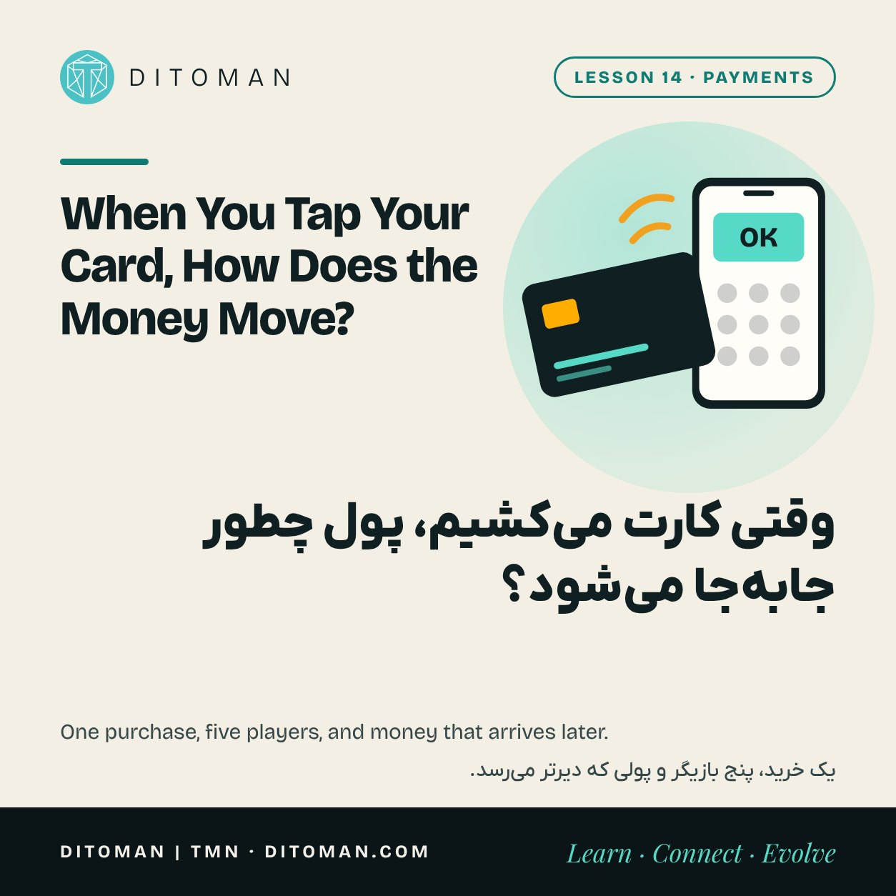
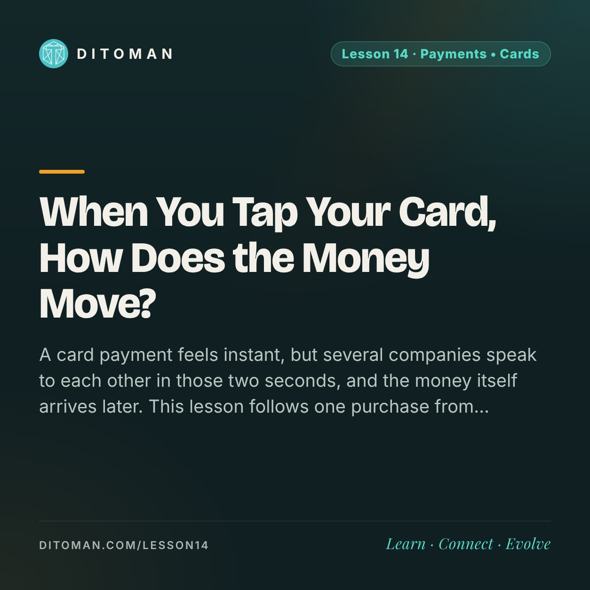

When You Tap Your Card, How Does the Money Move?
وقتی کارت میکشیم، پول چطور جابهجا میشود؟
A card payment feels instant, but several companies speak to each other in those two seconds, and the money itself arrives later. This lesson follows one purchase from the card reader to the shop's account.
خرید با کارت آنی به نظر میرسد، ولی در همان دو ثانیه چند شرکت با هم حرف میزنند و خودِ پول دیرتر میرسد. این درس یک خرید را از کارتخوان تا حساب فروشنده دنبال میکند.
Lesson Content
محتوای درس
Read the lesson in English or Persian.
درس را به فارسی یا انگلیسی بخوانید.
You hold your card to the reader, hear a beep, take the receipt and leave. Two seconds. It feels as if money jumped from your account to the shop.
It did not, at least not yet. What travelled in those two seconds was a question and an answer. The money follows later. Seeing the difference explains fees, refunds, failed payments and, later in this series, why crypto payments work so differently.
01. The five players
Every card payment has the same cast, whatever the country.
The cardholder: you.
The merchant: the shop.
The issuer: your bank, which gave you the card and holds your account.
The acquirer: the shop's bank or payment company, which provides the card reader and collects the money for the shop.
The network: the system in the middle that connects all banks to each other and sets the rules.
In most of the world the network is Visa or Mastercard. In Iran, Shaparak connects card readers and online gateways to the banks, and Shetab connects the banks to each other.
02. Step one: the question (authorisation)
When you tap, the reader sends a message through the acquirer and the network to your bank: this card, this amount, this shop. Is it good?
Your bank checks that the card is valid, the PIN or tap is correct, the balance is enough and nothing looks like fraud. Then it answers yes or no. On a yes, it puts a hold on the amount. All of this is the beep.
- 1You tap the card. The reader reads the card and the amount.
- 2The acquirer passes the request to the network.
- 3The network routes it to the bank that issued your card.
- 4Your bank checks balance, PIN and fraud signals, then answers yes or no.
- 5The answer returns to the reader: the beep.
- 6Later, banks settle and the shop's account is credited.
03. Step two: the money (clearing and settlement)
At the end of the day the approved payments are gathered and totalled. This is clearing: working out who owes what to whom.
Then comes settlement: the banks actually pay each other, usually through accounts at the central bank, and the shop's account is credited. That often happens the next working day, sometimes later.
So the shop's receipt is a promise that money is coming. For the customer it feels instant. For the shop it is not.
04. Who pays for all this?
Card readers, networks and fraud systems cost money. In most countries the merchant pays a small percentage of each sale, and part of that fee, called interchange, goes to the bank that issued the card.
The level varies a lot. The European Union caps interchange at 0.2 percent for debit cards and 0.3 percent for credit cards. In other markets the total fee can be two or three percent. In Iran the arrangement has been unusual: for years the banks paid the cost and shops paid nothing for card purchases.
When a shop gives a discount for cash, or adds a card surcharge, this fee is usually the reason.
05. Why payments sometimes fail or come back
Declined: the issuer answered no, because of balance, limits or a fraud check.
Money held but purchase failed: the hold was placed but the answer never reached the reader. The hold is released later, which is why the money "comes back" after a while.
Refunds and disputes: because banks stand in the middle, a card payment can be reversed. That protects buyers. It is also a cost and a risk for shops.
06. How this compares with crypto
A card payment is a chain of trusted companies passing messages, with settlement later. A blockchain payment has no issuer, acquirer or network company. The transfer itself is the settlement, and once confirmed it cannot be reversed by a bank.
That makes it fast and open to anyone, and it also removes the safety net. Lesson 16 follows a crypto transaction in the same step-by-step way.
What to take from this
The beep is an answer to a question. The money moves later.
Five players take part: cardholder, merchant, issuer, acquirer and network.
Authorisation is instant. Clearing and settlement take hours or days.
Someone always pays for the system, usually the merchant, and the rules differ by country.
Card payments can be reversed. Blockchain payments cannot. Each has a cost.
کارت را به کارتخوان نزدیک میکنیم، یک بوق میشنویم، رسید را میگیریم و میرویم. دو ثانیه. به نظر میرسد پول از حساب ما به حساب مغازه پریده است.
ولی هنوز این اتفاق نیفتاده. چیزی که در آن دو ثانیه جابهجا شد یک پرسش و یک پاسخ بود. خودِ پول بعداً میآید. دیدن این تفاوت، کارمزد، برگشت پول و تراکنش ناموفق را توضیح میدهد، و در ادامهی همین مجموعه نشان میدهد چرا پرداخت کریپتویی اینقدر متفاوت کار میکند.
۰۱. پنج بازیگر
هر پرداخت کارتی، در هر کشوری، همین بازیگران را دارد.
دارندهی کارت: خود ما.
فروشنده (پذیرنده): مغازه یا فروشگاه.
بانک صادرکننده: بانک ما که کارت را داده و حسابمان پیش اوست.
بانک پذیرنده: بانک یا شرکت پرداختِ مغازه که کارتخوان را میدهد و پول را برای فروشنده جمع میکند.
شبکه: سامانهای در میانه که همهی بانکها را به هم وصل میکند و قواعد را تعیین میکند.
در بیشتر دنیا این شبکه ویزا یا مسترکارت است. در ایران، شاپرک کارتخوانها و درگاههای اینترنتی را به بانکها وصل میکند و شتاب بانکها را به یکدیگر.
۰۲. قدم اول: پرسش (تأیید تراکنش)
وقتی کارت میکشیم، کارتخوان پیامی را از راه شرکت پرداخت و شبکه به بانک ما میفرستد: این کارت، این مبلغ، این فروشگاه. تأیید میکنی؟
بانک ما بررسی میکند که کارت معتبر باشد، رمز درست باشد، موجودی کافی باشد و نشانهای از تقلب نباشد. بعد جواب میدهد: بله یا نه. اگر جواب بله باشد، آن مبلغ را در حساب مسدود میکند. همهی اینها همان یک بوق است.
- ۱کارت میکشیم. کارتخوان کارت و مبلغ را میخواند.
- ۲شرکت پرداختِ فروشنده درخواست را به شبکه میدهد.
- ۳شبکه آن را به بانک صادرکنندهی کارت میرساند.
- ۴بانک ما موجودی، رمز و نشانههای تقلب را بررسی میکند و جواب بله یا نه میدهد.
- ۵پاسخ به کارتخوان برمیگردد: همان بوق.
- ۶بعداً بانکها تسویه میکنند و پول به حساب فروشنده مینشیند.
۰۳. قدم دوم: پول (پایاپای و تسویه)
آخر روز، پرداختهای تأییدشده جمع و حساب میشوند. به این کار پایاپای میگویند: معلوم میشود چه کسی به چه کسی چقدر بدهکار است.
بعد نوبت تسویه است: بانکها واقعاً به هم پول میدهند، معمولاً از راه حسابهایشان نزد بانک مرکزی، و پول به حساب فروشنده مینشیند. این کار اغلب روز کاری بعد انجام میشود و گاهی دیرتر.
پس رسید فروشنده قولی است که پول در راه است. برای خریدار آنی به نظر میرسد. برای فروشنده اینطور نیست.
۰۴. هزینهی این همه را چه کسی میدهد؟
کارتخوان، شبکه و سامانههای ضدتقلب هزینه دارند. در بیشتر کشورها فروشنده درصد کمی از هر فروش را میپردازد و بخشی از آن کارمزد، به بانکی میرسد که کارت را صادر کرده است.
اندازهی این کارمزد خیلی فرق میکند. اتحادیهی اروپا سقف آن را برای کارت نقدی ۰٫۲ درصد و برای کارت اعتباری ۰٫۳ درصد گذاشته است. در بازارهای دیگر کل کارمزد میتواند دو یا سه درصد باشد. در ایران وضع متفاوت بوده: سالها این هزینه را بانکها میپرداختند و فروشنده برای خرید کارتی چیزی نمیداد.
وقتی فروشگاهی برای پرداخت نقدی تخفیف میدهد یا برای کارت مبلغی اضافه میگیرد، دلیلش معمولاً همین کارمزد است.
۰۵. چرا پرداخت گاهی ناموفق میشود یا پول برمیگردد
رد شدن: بانک صادرکننده جواب «نه» داده؛ بهخاطر موجودی، سقف تراکنش یا بررسی تقلب.
پول کم شد ولی خرید انجام نشد: مبلغ مسدود شده ولی پاسخ به کارتخوان نرسیده است. این مبلغ بعداً آزاد میشود و برای همین پول «بعد از مدتی برمیگردد».
برگشت پول و اعتراض: چون بانکها در میانهاند، پرداخت کارتی را میشود برگرداند. این از خریدار محافظت میکند و برای فروشنده هزینه و ریسک دارد.
۰۶. مقایسه با کریپتو
پرداخت کارتی زنجیرهای از شرکتهای مورد اعتماد است که به هم پیام میدهند و تسویه بعداً انجام میشود. در پرداخت روی بلاکچین، بانک صادرکننده، شرکت پرداخت و شرکت شبکهای وجود ندارد. خودِ انتقال همان تسویه است و بعد از تأیید، هیچ بانکی نمیتواند آن را برگرداند.
این آن را سریع و برای همه در دسترس میکند و همزمان تور ایمنی را هم برمیدارد. درس ۱۶ یک تراکنش کریپتویی را به همین شکل قدمبهقدم دنبال میکند.
چه برداشتی کنیم
آن بوق، پاسخ به یک پرسش است. پول بعداً جابهجا میشود.
پنج بازیگر در کارند: دارندهی کارت، فروشنده، بانک صادرکننده، بانک پذیرنده و شبکه.
تأیید آنی است. پایاپای و تسویه چند ساعت یا چند روز طول میکشد.
همیشه کسی هزینهی این سامانه را میدهد، معمولاً فروشنده، و قواعدش در هر کشور فرق دارد.
پرداخت کارتی را میشود برگرداند. پرداخت روی بلاکچین را نمیشود. هر کدام هزینهای دارد.
Same question, across a border
همین پرسش، آن طرف مرز
Inside one country the network connects every bank. Between countries there is no single network, and that is where cost and delay begin. Lesson 15 follows a payment abroad.
داخل یک کشور، شبکه همهی بانکها را به هم وصل میکند. میان کشورها شبکهی واحدی نیست و هزینه و تأخیر از همانجا شروع میشود. درس ۱۵ یک پرداخت به خارج را دنبال میکند.
Key Concepts
مفاهیم کلیدی
- Cardholder and merchant
- Issuer
- Acquirer
- Card network
- Authorisation
- Clearing
- Settlement
- Interchange fee
- Chargeback
- دارندهی کارت و فروشنده
- بانک صادرکننده
- بانک پذیرنده
- شبکهی کارت
- تأیید تراکنش
- پایاپای
- تسویه
- کارمزد
- برگشت پرداخت
Learning Objectives
اهداف یادگیری
- Name the five players in a card payment and what each one does.
- Explain the difference between authorisation and settlement.
- Say why a shop receives its money later than the customer thinks.
- Explain who usually pays card fees and why they differ by country.
- Compare a reversible card payment with a final blockchain payment.
- پنج بازیگر یک پرداخت کارتی و کار هر کدام را نام ببرید.
- تفاوت تأیید تراکنش و تسویه را توضیح دهید.
- بگویید چرا پول دیرتر از آنچه خریدار فکر میکند به فروشنده میرسد.
- توضیح دهید کارمزد کارت را معمولاً چه کسی میدهد و چرا در هر کشور فرق دارد.
- پرداخت کارتیِ برگشتپذیر را با پرداخت قطعی روی بلاکچین مقایسه کنید.
Quiz
آزمونک
Check what stayed with you. The answer is under each question.
ببین چه چیزی در ذهنت مانده. پاسخ زیر هر پرسش آمده است.
Question 1
پرسش ۱
What actually happens in the two seconds before the beep?
در دو ثانیهی پیش از بوق، واقعاً چه اتفاقی میافتد؟
A. Money moves to the shop's account
الف. پول به حساب فروشنده میرود
B. Your bank answers a request and holds the amount
ب. بانک ما به یک درخواست جواب میدهد و مبلغ را مسدود میکند
C. The central bank prints a receipt
ج. بانک مرکزی رسید صادر میکند
Correct answer: B
پاسخ درست: ب
Question 2
پرسش ۲
Which bank issued your card and holds your account?
کدام بانک کارت شما را داده و حسابتان پیش اوست؟
A. The issuer
الف. بانک صادرکننده
B. The acquirer
ب. بانک پذیرنده
C. The network
ج. شبکه
Correct answer: A
پاسخ درست: الف
Question 3
پرسش ۳
What is settlement?
تسویه چیست؟
A. Checking the PIN
الف. بررسی رمز کارت
B. Printing the receipt
ب. چاپ رسید
C. Banks actually paying each other
ج. پرداخت واقعی بانکها به یکدیگر
Correct answer: C
پاسخ درست: ج
Question 4
پرسش ۴
The amount left your balance but the purchase failed. What most likely happened?
مبلغ از موجودی کم شد ولی خرید انجام نشد. به احتمال زیاد چه شده؟
A. The shop took the money
الف. فروشنده پول را برداشته
B. A hold was placed and will be released
ب. مبلغ مسدود شده و بعداً آزاد میشود
C. The card is cancelled
ج. کارت باطل شده
Correct answer: B
پاسخ درست: ب
Question 5
پرسش ۵
How does a confirmed blockchain payment differ from a card payment?
پرداخت تأییدشده روی بلاکچین چه فرقی با پرداخت کارتی دارد؟
A. A bank can reverse it
الف. بانک میتواند آن را برگرداند
B. It is final and no bank can reverse it
ب. قطعی است و هیچ بانکی نمیتواند آن را برگرداند
C. It always costs three percent
ج. همیشه سه درصد کارمزد دارد
Correct answer: B
پاسخ درست: ب
Sources
منابع
- EU Regulation 2015/751 on interchange fees for card-based payments
- BIS CPMI: Glossary of payments and market infrastructure terminology
- Shaparak: Iran's electronic card payment network
- Mehr News: Card payment fees in Iran and who has paid them
Fee levels and rules change. The figures here describe the general structure, not a quote for any shop or bank.
اندازهی کارمزدها و قواعد تغییر میکند. عددهای این درس ساختار کلی را نشان میدهند، نه نرخ یک فروشگاه یا بانک مشخص را.
با هم دنبال میکنیمFollow along
New lessons are announced first on Ditoman's channels.
درسهای تازه اول در کانالهای دیتومان معرفی میشوند.